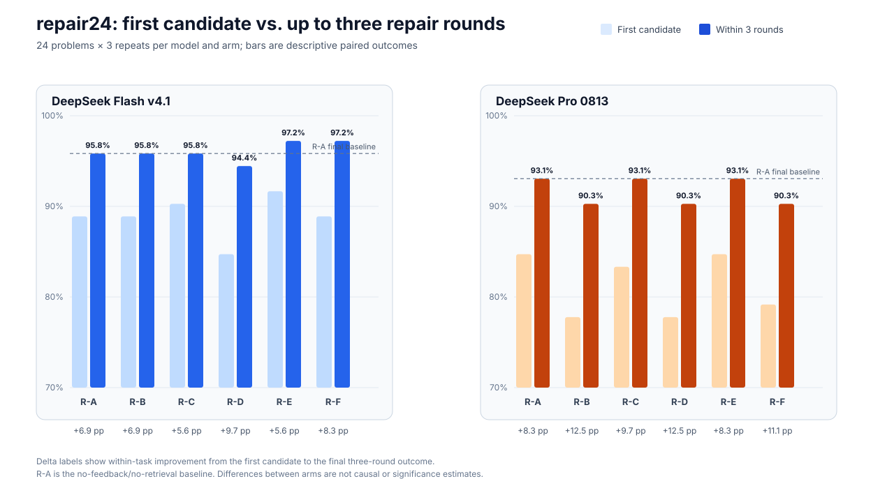

Isolate the patch
Replace the target proof region in a temporary project while retaining its imports and theorem declaration.
RESEARCH SOFTWARE · LEAN 4
TRACER turns a failed Lean proof into an inspectable repair process: generate a candidate, compile it in the target project, preserve the error, adapt the next attempt, and independently recheck the saved solution.
Static website and demo · no API key required · no live model calls
01 / METHOD
The contribution is the loop around generation: a candidate is useful only when its provenance, compiler outcome, and next step can be inspected.
Replace the target proof region in a temporary project while retaining its imports and theorem declaration.
Keep raw Lean output alongside normalized and structured feedback, with links to the source diagnostic.
Use the current error state to choose feedback and retrieval context within a fixed round budget.
Save accepted proofs for independent recompilation; package failures as replayable LeanCapsules.
02 / PUBLISHED EVIDENCE
The published repair24 study pairs 24 problems, two DeepSeek-family configurations, three repeats, and six research arms.
76 additional task instances succeeded after round one.
Descriptive first-to-final conversion across paired task instances. It is not a causal estimate of feedback benefit.
AUDITED RELEASE
R-A to R-F compare no feedback, compiler feedback, fixed retrieval, retrieval only, error-adaptive retrieval, and failure context. The result depends on model configuration; no arm is presented as a universal winner. The complete prior release remains in the local archive; this repository hosts the 24-case website replay.

Inspect project repository ↗03 / RESEARCH STATUS
24 reviewed failure cases across Std, Mathlib, and project-local settings. A separate 12-core / 4-challenge set checks clean replay.
SP-1–SP-12 and eight benign controls have offline results; one native Linux isolation run observed 14 frozen controls.
TRACER-REAL v2 freezes 254 test repairs across five independent projects. The v3 provider run is ongoing; no accepted outcome is published yet.
Evidence snapshot: 1 November 2026. Runtime attempts remain separate from audited, published conclusions.
TRY THE EVIDENCE
Browse real saved examples in a browser-only interface, or use the repository to run Lean locally.